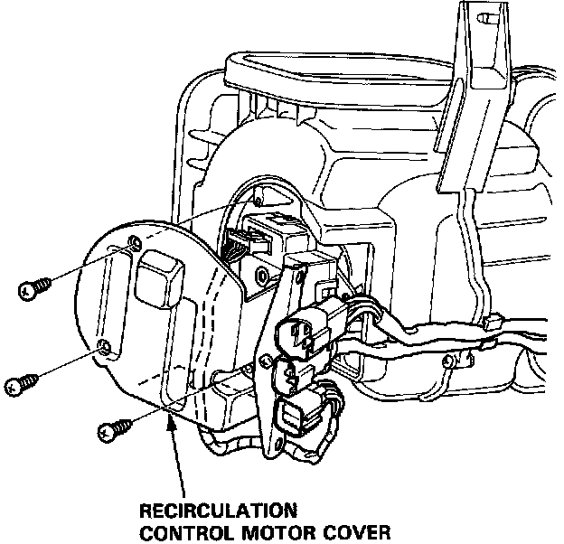
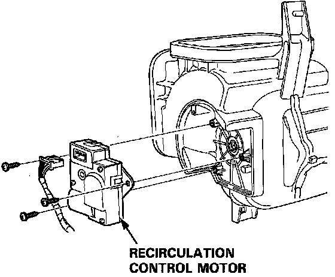

Recirculation Control Motor Replacement
Recirculation Control Motor Replacement1. Remove the blower.

2. Remove the recirculation control motor cover from the blower (3 screws).

3. Remove the recirculation control motor (1 connector and 3 screws).
4. Install the recirculation control motor in the reverse order of removal. Apply battery voltage and watch the door movement.
Make sure that the recirculation door moves smoothly without binding.
Make sure the motor doesn't pull the door too far.